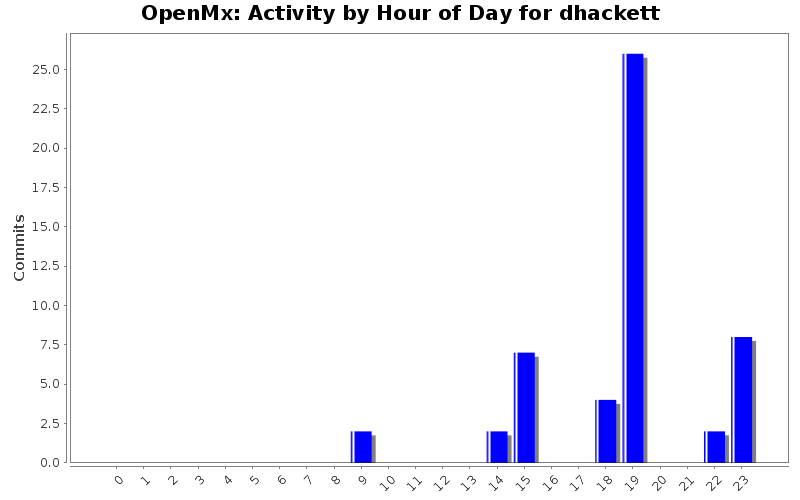
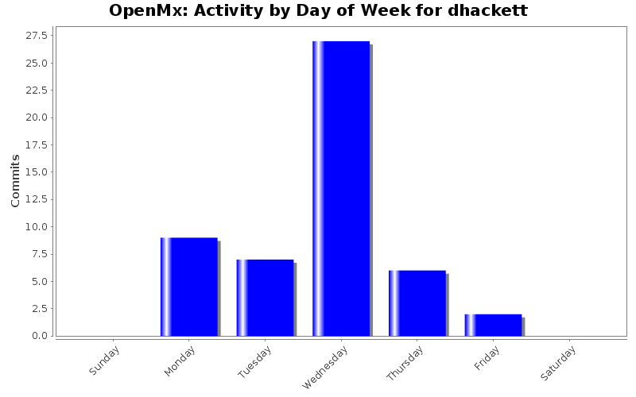
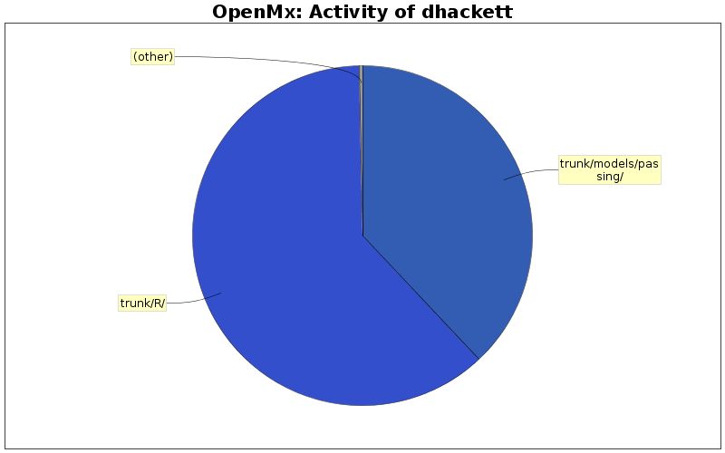

| Directory | Changes | Lines of Code | Lines per Change |
|---|---|---|---|
| Totals | 51 (100.0%) | 2963 (100.0%) | 58.0 |
| trunk/R/ | 9 (17.6%) | 1827 (61.7%) | 203.0 |
| trunk/models/passing/ | 34 (66.7%) | 1126 (38.0%) | 33.1 |
| trunk/models/failing/ | 4 (7.8%) | 6 (0.2%) | 1.5 |
| trunk/demo/ | 4 (7.8%) | 4 (0.1%) | 1.0 |

Fixed an error in PPML where the analytical solution for error variance was incorrect in some models where data was specified as a covariance matrix with a means vector.
181 lines of code changed in 2 files:
Accidentally committed with an uncommented browser() in PPML_testFactorModelMatrixCov.R.
0 lines of code changed in 1 file:
Fixed issues with PPML_testFactorModelMatrixCov.R and PPML_testFactorModelMatrixCovMean.R.
5 lines of code changed in 2 files:
Possible fix for failing PPML tests
4 lines of code changed in 2 files:
Integrating PPML analytical solution in to the trunk.
Currently applicable to models specified in both path and matrix form, with either covariance matrix or raw data. Support for data sets with missingness in development.
For RAM models, if PPML is applicable in such a way that an analytical solution can be computed, the model will be transformed and solved. Optimizations to models not analytically solvable are possible and in development, but not fully implemented yet.
Adds a new model option, UsePPML. Can be set to "Yes" or "No". mxDisablePPML(model) and mxEnablePPML(model) set this option.
PPML applicability filter has been separated off in to another function, imxCheckPPMLApplicable. This function returns "Solve", "PartialSolve", "Split", or NA depending on how PPML is applicable to the given model. The return value from this function can be passed to the transform function. By default, however, the transform function will call imxCheckPPMLApplicable.
Following the analytical solution, the backend will be called for one cycle to compute Hessians and Standard Errors.
The UsePPML option is also used to track what PPML did to the model. After the run is complete, it will have value "Solved", "PartialSolved", or "Split".
1315 lines of code changed in 25 files:
Added a test case on homogeneous-variance factor models with fake latents for PPML, fixed a related bug.
44 lines of code changed in 2 files:
Two new test cases for PPML for models with non-homogeneous error variance: one for matrix specified models, and one for models with "fake latents". Some bug fixes involving these cases.
imxTestPPML modified to check to make sure that the PPML transformation has actually occurred. Also modified NHEV tests, which don't use imxTestPPML, to do the same tests.
220 lines of code changed in 7 files:
Uploading an (incomplete) set of tests that check that PPML-transformed models have the same output as the untransformed models. Tests include a simple two-factor model with covariance data, linear growth curve models (modified from preexisting tests) specified in both path and matrix forms, a multilayered model with a latent predicting another latent, and 4 models with non-homogeneous error variance with both raw and covariance data.
448 lines of code changed in 8 files:
Some bug fixes: filter for NHEV works correctly, omxRestoreResult no longer throws an error when no variables have labels, and fakeLatents folding in to the symmetric matrix for NHEV is reimplemented.
44 lines of code changed in 1 file:
Updating with developments on PPML implementation. Now supports:
Covariance data with or without means
(Some) models with latents predicting latents
Models with non-homogeneous error variance specified by a constant error covariance matrix with an error parameter factor
Also implemented is a reverse transform function to reinsert results from a PPML transformed model back in to the original model, works on all models that the PPML algorithm can currently transform
702 lines of code changed in 1 file: